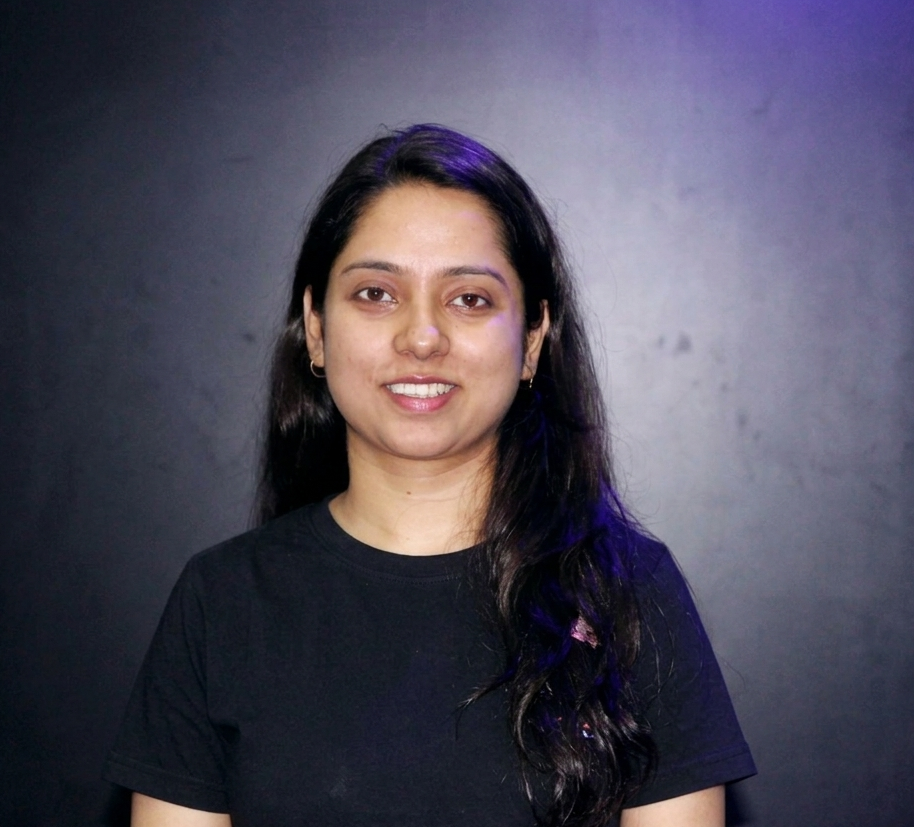

I am a cybersecurity practitioner specializing in Maritime and Operational Technology (OT) security. My professional focus centers on protecting critical infrastructure, vessel bridge command systems, and industrial control environments. My practice integrates digital forensics and incident response (DFIR), endpoint threat detection, and threat intelligence with a strong emphasis on regulatory compliance like IMO 2021 and IACS standards. Currently completing my Master's at ESILV in Cyber Security & IoT Trust.
